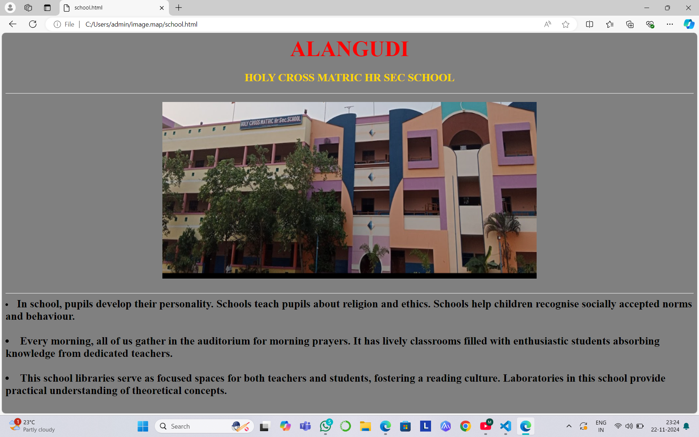

ALANGUDI
HOLY CROSS MATRIC HR SEC SCHOOL

In school, pupils develop their personality.
Schools teach pupils about religion and ethics.
Schools help children recognise socially accepted norms and behaviour.
Every morning, all of us gather in the auditorium for morning prayers.
It has lively classrooms filled with enthusiastic students absorbing knowledge from dedicated teachers.
This school libraries serve as focused spaces for both teachers and students, fostering a reading culture.
Laboratories in this school provide practical understanding of theoretical concepts.